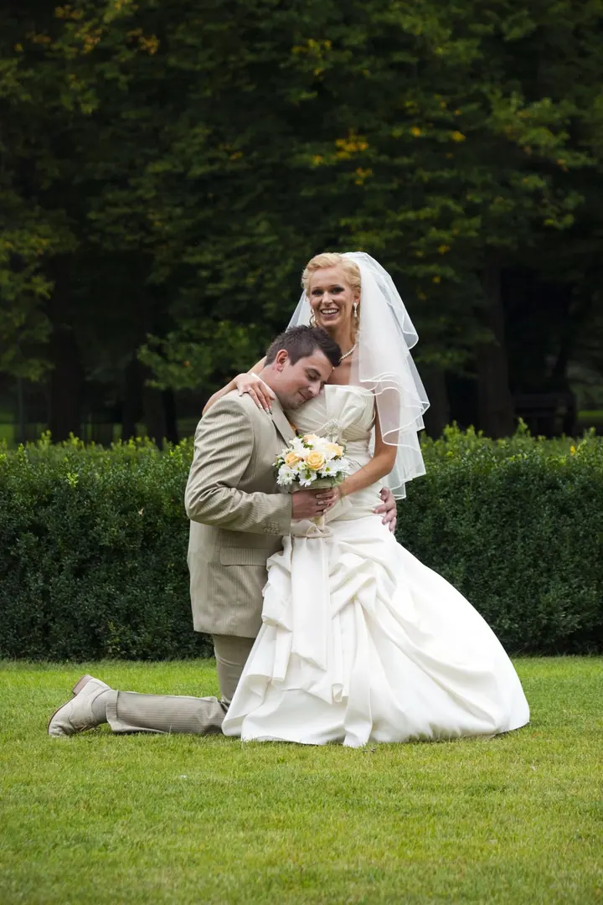
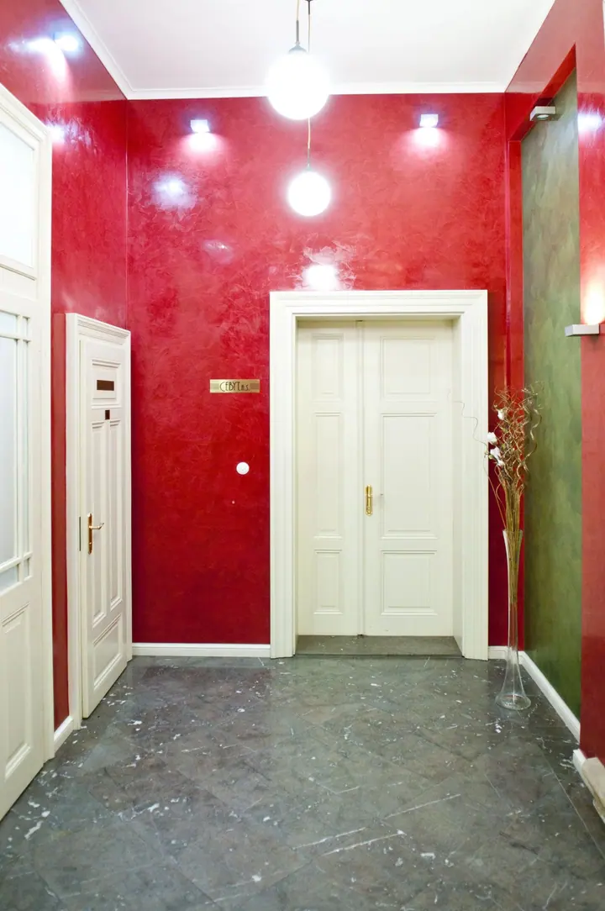
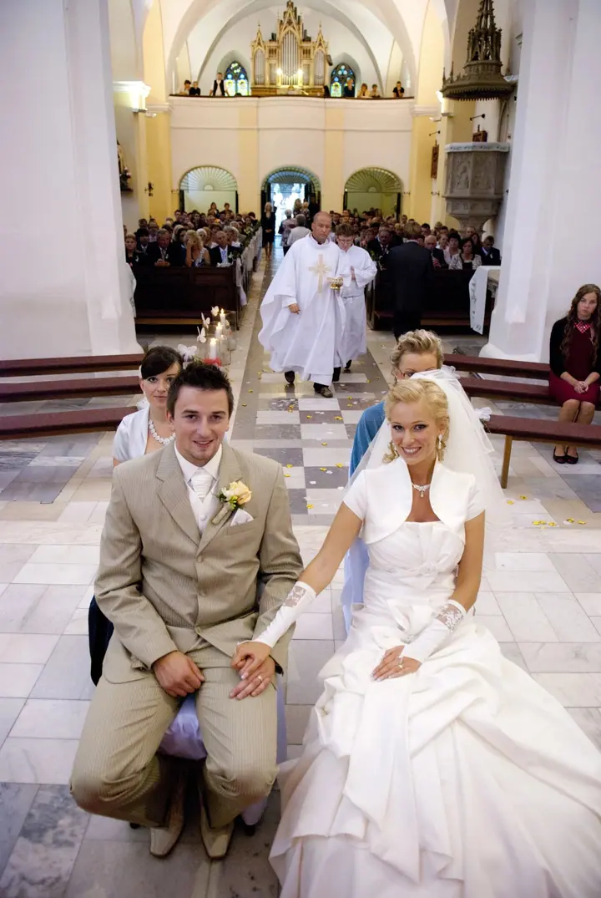
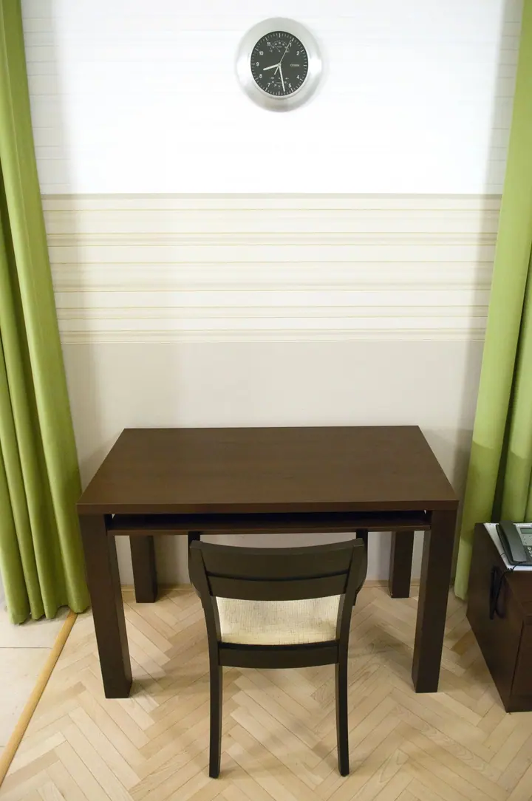
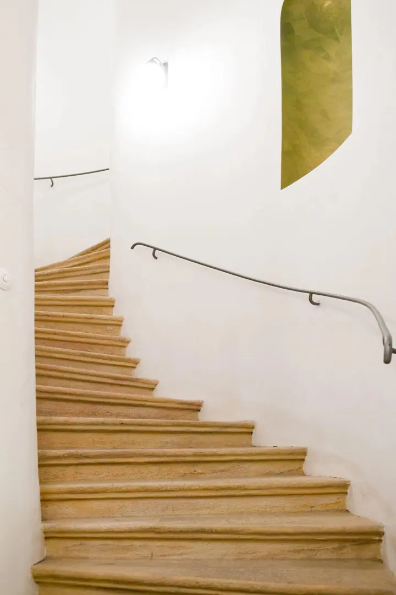

01 / 03
Svatební fotografie
Fotím celý svatební den od obřadu v kostele nebo na zahradě až po večerní tanec. Zachytím atmosféru, hosty i drobné detaily jako podpis do oddacího listu.
Zeptat se na termín→




Fotím svatby, domy i sport
Zeptat se na termín →(01) Ahoj
Jmenuji se František Procházka a fotím svatby , interiéry bytů a domů i sportovní akce . Každá z těch zakázek je jiná, ale vždycky mi jde o to samé: aby fotky ukazovaly věci takové, jaké opravdu jsou.
(02) Co fotím
01 / 03
Fotím celý svatební den od obřadu v kostele nebo na zahradě až po večerní tanec. Zachytím atmosféru, hosty i drobné detaily jako podpis do oddacího listu.
Zeptat se na termín→02 / 03
Fotím byty, pokoje i společné prostory domů pro prodej a pronájem. Snímky jsou čisté, rovné a dobře nasvícené, aby prostor vynikl takový, jaký opravdu je.
Zeptat se na termín→03 / 03
Fotím zápasy, turnaje a týmové fotky v halách i venku. Akci zachytím z blízka a týmům připravím společné snímky na památku.
Zeptat se na termín→(04) Postup
Od první zprávy po hotovou galerii.
Krok 1 z 4
Zavolejte mi nebo napište přes formulář, o jakou akci nebo nemovitost jde a kdy.
Krok 2 z 4
Probereme průběh dne, místo a co je pro vás na fotkách nejdůležitější.
Krok 3 z 4
Přijedu včas a fotím v klidu, ať už jde o svatební den, interiér nebo zápas.
Krok 4 z 4
Vybrané a upravené fotky vám předám v online galerii, odkud si je stáhnete.
Celý den, od obřadu až po poslední tanec
(05) Za objektivem
Nejvíc mě to táhne ke svatbám. Rád jsem u obřadu v kostele, při podpisu oddacího listu i večer na parketu, kdy se rozdovádí celá rodina. Snažím se být po ruce, ale nepřekážet, aby den běžel po vašem.
Vedle svateb fotím reality. Byty, pokoje i chodby fotím tak, aby byl prostor čitelný, světlý a rovný, protože podle fotek se lidé rozhodují, jestli se na nemovitost vůbec přijdou podívat.
A pak je tu sport. Rád fotím v halách, kde se pořád něco děje, a stejně rád postavím celý tým na společnou fotku. Hotové galerie sdílím online, takže si je snadno prohlédnete a stáhnete.
František
František Procházka · Svatební, realitní a sportovní fotograf
Ano, fotím církevní i civilní obřady a přizpůsobím se pravidlům daného místa.
Hotové fotky vám předám v online galerii, odkud si je prohlédnete a stáhnete.
Ano, nafotím byt, dům nebo ubytování pro kohokoli, kdo potřebuje prostor dobře představit.
Rád. Domluvíme se, které zápasy nebo části akce chcete mít nafocené, a týmové fotky zvládneme mezi nimi.
(07) Kontakt
Napište pár vět o tom, co si představujete, a termín, který se vám hodí.